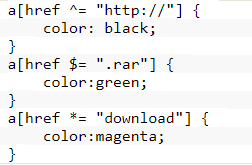
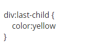
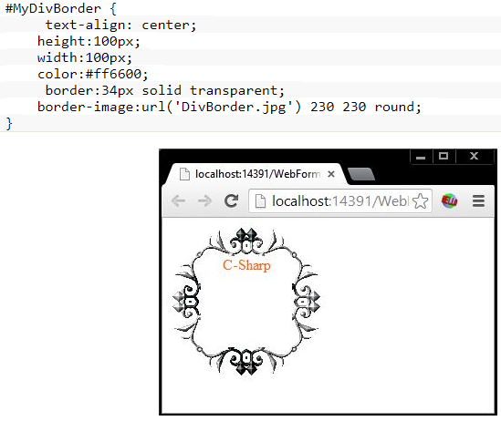
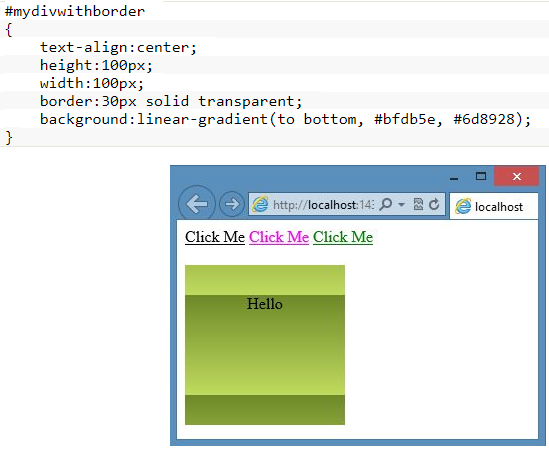
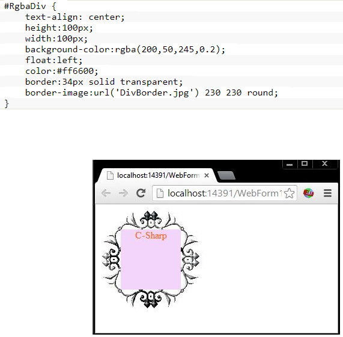
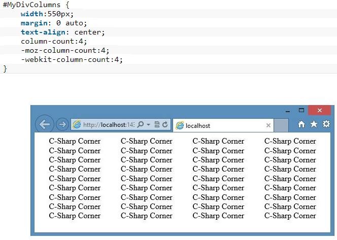

An em value is calculated against the font-size of a current element, so boxes sized with it will consequently scale as font sizes are adjusted by the element or its ancestors. Meanwhile, rem is defined as the font-size of the root element. So, all references to rem will return the same value, regardless of ancestor font size. In effect, rem is a document-wide CSS variable. Browser support for rem is quite good these days. It’s limited on desktop because IE8 does not support it, but common mobile and tablet browsers handle it much better.There are a couple of reasons to use this pattern. Of course you can set everything in pixels, but if you want to make something responsive, you usually need to overwrite more values. And another, maybe more important, reason: some people will have their browser font size set to something else than the default 16px, for example people who are visually impaired. You may be familiar with a browser’s page zoom setting, which scales up all the contents on the page proportionally. A lesser known feature of most browsers, though, is the option to adjust your preferred font size. This feature operates independently from the page zoom feature. For example, these are the options used for the font size drop-down menu in Chrome’s appearance settings — ranging from the very small (9px) through very large (24px) — with the recommended default of medium set at 16px. If you set a higher default font size, you wouldn't have to zoom in the browser to be able to read a website, because the content of a website with relative units would increase with your preferred font size.
The power of em and rem
March 16, 2020 : 9:29 pm
Html elements and default browser width
There is no default font size for HTML. In fact HTML has nothing to do with it, font size is determined by CSS but there is no default font size for CSS either.If your stylesheet has no font size specified then it is determined by the browser and the standard default font size in most browsers is 16px (usually 16px for body text and different bigger sizes for h1-h6 headings). That said, even though this is the default it can be amended within the browsers user preferences. For example partially sighted people could potentially set this to a larger default browser font size if they chose to do so. therefore if we didn't specify the font size of our html element size the browser sets it to it's default value of 16px but if we did specify our html element a size like 200px it will go with this.
March 16, 2020 : 10:30 pm
Introducing New Features of CSS3
Now a days we work with the new CSS3 features that provide style for web pages. Most professional web developers use CSS for styling web pages. In the current scenario, CSS 3 is the latest version of CSS and you can determine the use of some new features released with CSS 3.Here are some of the features introduced in css3:
Selector
Now using the selectors in CSS, you can match the elements and apply the styles for them. The CSS 3 adds new selectors to the existing selectors. There are two types of selectors present here.Attribute substring selectors
You can apply the attribute substring selector where the element attribute starts with, ends with or contains a specified string. For example:
Pseudo class selectors
This selector allows you to match the element that is based on their structural position. As an example: What if we want to apply the color for the last child of a div? Then we can style it using the following selector
Border Images
You generally use the solid or dashed line as a border of the DOM element. Now CSS3 allows you to use the image as a border of the element. Using an image as a border will make the element border quite fancy and attractive. Create the CSS code as in the following:As you can see that the border-image property is used and contains the URL of the border-image. The round indicates that the middle part of the border-image is repeated. The border-image width is 30px.
Gradient
Generally, a solid color is used as a background of an element. Now CSS3 provides the Gradient with which we can fill the color without needing any images. We can apply an easy transition of colors.
As you can see, the gradient color is specified from top to bottom and starting and ending colors are defined also. You can also use various gradient types.
Opacity
We use rbg() to set the color of the element in the CSS2 and now in the CSS3, we use rgba() that allows specifying an alpha value in addition to red, green and blue values. The alpha value controls the opacity of the element. The value should be less than 1. It can be any value from 0 to 1. 0 is fully transparent and 1 is fully vague.So consider the following CSS code:
As you can see that I've applied the background color (RGBA) with the border image also.
Multicolumn
It is so uninteresting to show the text in the columns because the CSS2 does not provide a smooth way to split the text into columns. Previously developers had to work hard to calculate the text for the respective column. CSS3 now has the column-count property.Consider the following CSS:The entire text is split into 4 columns.
March 16, 2020 : 11:35 pm